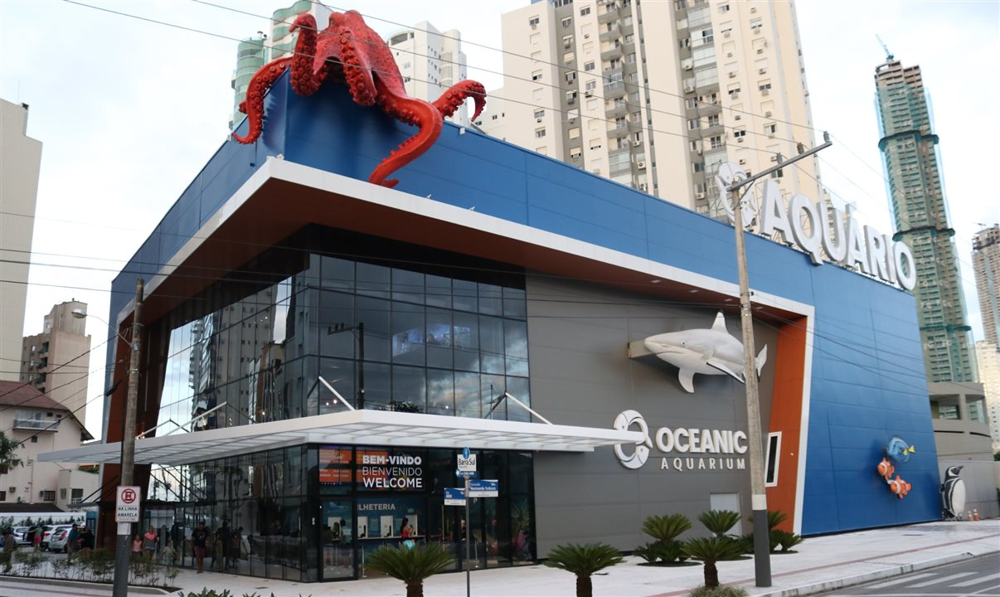
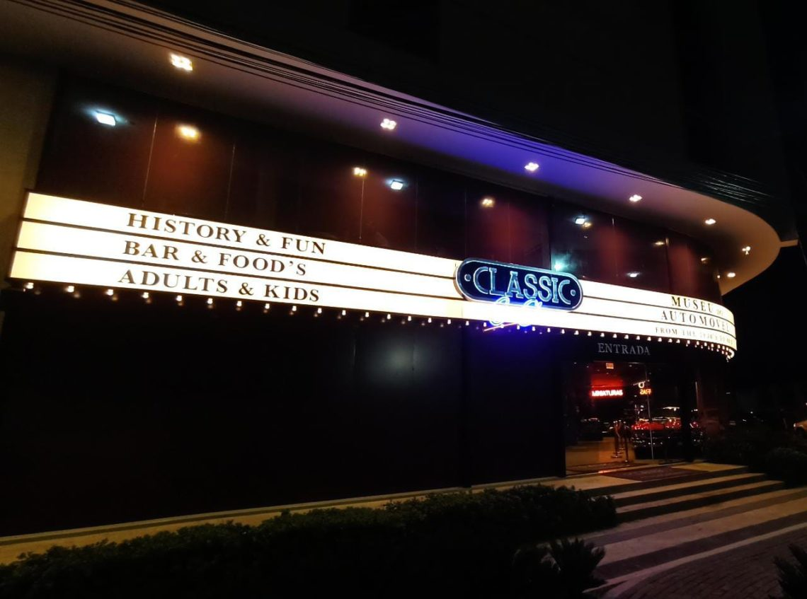
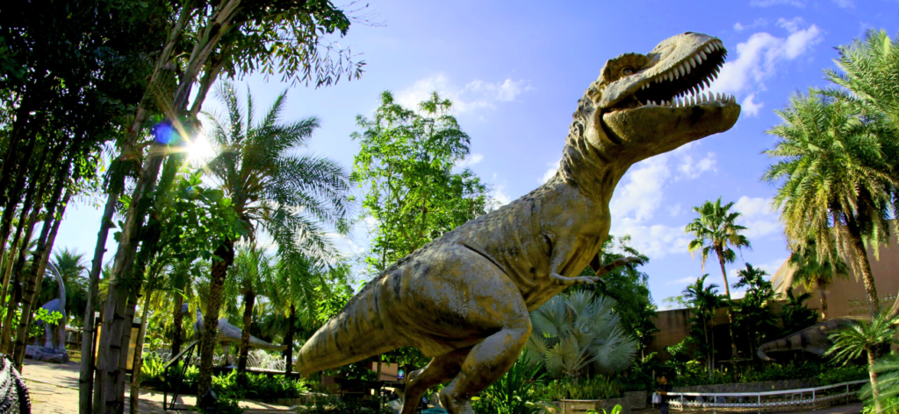
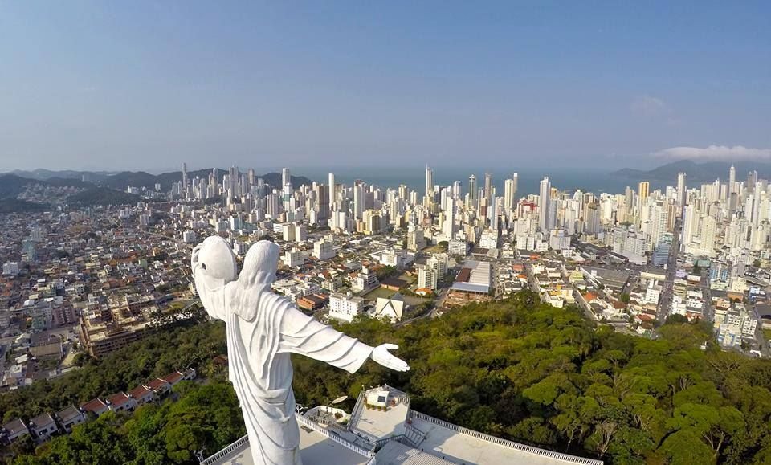

Oceanic Aquarium
O Oceanic Aquarium é considerado o melhor aquario do sul do Brasil, então se você gosta de admirar a vida marinha e de água doce, o Oceanic Aquarium é parada obrigatória, a tração possui 30 habitats com cerca de 140 espécies de animais do mundo todo, cada habitat é especialmente desenvolvido para atender as necessidades de cada espécie.
Lá, você tambem poderá encontar uma área chamada Imersão Oceania, um local para imersão com aves, do continente da Oceania. São encontradas duas espécies da Austrália e da Nova Zelândia: o periquito-australiano (Melopsittacus undulatus) e o diamante-de-gould (Erythrura gouldiae). Ali, você poderá observá-las bem de perto dentro do recinto, e se encantar com as cores dessas belíssimas aves.
Vou deixar o site, oficial do Oceanic Aquarium, para a compra de ingressos e mais informações sobre o aquario.
Link oficial do Oceanic Aquarium: https://www.oceanicaquarium.com.br/
Classic Car Show
você é vidrado em modelos de carros e motos classicos? Então vou lhe apresentar o Classic Car Show, o museu do automovel de Balneário Camboriú, aqui você verá corros e motos que só se vê em filmes que passam se nos anos 60, 70 e 80, são 30 modelos de carros e 6 de motos, todos incriveis.
O espaço conta tambem com estúdio de fotografia, bar temático, loja de souvinirs e galerias de fotos, tudo pra você imergir nesse mundo, os valores de ingressos e todas as informações sobre os automoveis estão no site oficial do Classic Car Show, vou deixar ele aqui pra vocês.
Link oficial do Classic Car Show: https://www.classiccarshow.com.br/
Aventura Jurassica
Aventura Jurassica, o parque dos dinossauros de Balneário Camboriú, lá você vai se deparar com mais de 100 dinossauros, com seus tamanhos fielmente replicados, e maioria deles são animatrônicos, ou seja, o máximo de realismo possivel pra você curtir a experiência.
Lá você tambem vai ter um centro vulcânico com exposição de fósseis originais, cinema interativo, playground in e outdoor, trilha, passeio de barco em rio artificial, arvorismo, labirinto, área para descanso, loja temática, restaurante temático, tirolesa e estacionamento exclusivo.
Iformações sobre valores de ingressos e mais sobre o parque, você encontra no site oficial da Aventura Jurassica, que vou deixar aqui para vocês.
Link oficial da Aventura Jurassica: https://ingresso.aventurajurassica.com.br/
Cristo Luz
O Cristo Luz, é uma das atrações mais tradicionais de Balneário Camboriú, ela fica localizada em um dos pontos mais altos da cidade, à 150 metros de altura, lá você terá uma vista incrivel da cidade, e vista é melhor ainda quando apreciada de noite, já que o monumento, tambem fica iluminado, ele possui 7 cores, e cada uma é mais predominante em cada dia da semana, onde cada cor tem seu significado.
O espaço possui restaurantes e local para à realização de eventos, diversos, então se você está procurando um lugar especial para fazer sua festa de aniversário, casamento ou outro evento especial para você, provávelmente, não vai, encontrar lugar melhor que o Cristo Luz.
Todas as informações sobre os valores de entrada e sobre o aluguel das áreas de eventos, estão no site oficial do Cristo Luz, que vou deixar aqui, para vocês.
Link oficial do Cristo Luz: https://www.cristoluz.com.br/#